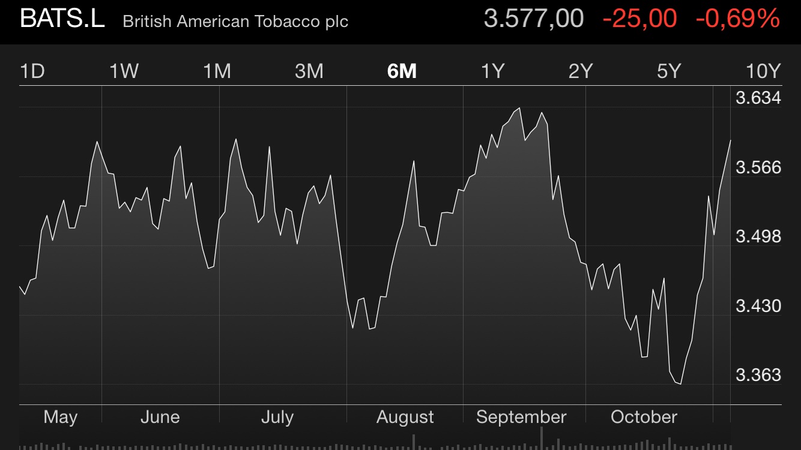
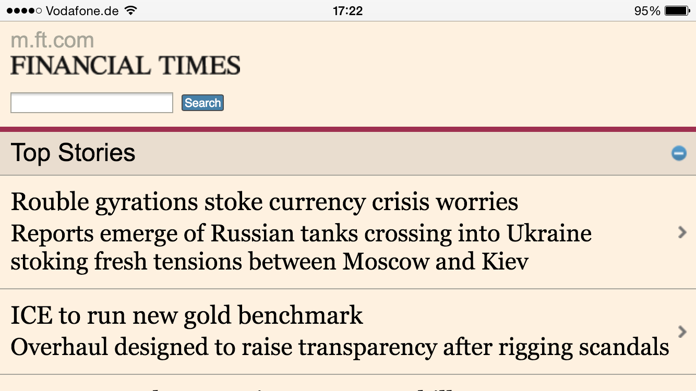
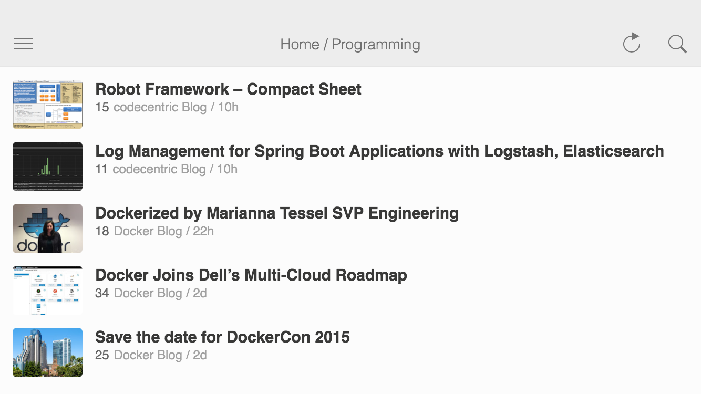

High level overview
- framework for hybrid mobile apps
- based on AngularJS and Cordova
- open source (MIT licensed)
- combination of various open source tools and frameworks
So, what is a hybrid app anyway?
Native app
- developed using the platform's toolsets
- one codebase per platform
- great user experience and performance possible
- default design determined by platform

image shows the Stocks app on an iPhone 6
Mobile website
- Just a website that
- responds to different viewport sizes,
- is optimized to be loaded via slow connections.
- circumvent app store and monetization rules of app stores

image shows the mobile Financial Times website on an iPhone 6
Hybrid app
- a web app that is running inside a native shell
- looks similar to a native app and feels like one
- distributed via the platforms' app store
- one codebase, multiple platforms

Image shows the Feedly hybrid app on an iPhone 6
Apache Cordova: A hybrid app platform

Apache Cordova is a platform for building native mobile applications using HTML, CSS and JavaScript
Source: http://cordova.apache.org/
Cordova hides OS differences
Let's take a look at Ionic
Hello World with Ionic
<ion-list>
<ion-item ng-repeat="item in items">
Hello, {{item}}!
<ion-option-button class="button-positive">
Share
</ion-option-button>
</ion-item>
</ion-list>
Programming Model
Many directives
<ion-slide-box> <ion-slide><img src="banana.jpg"/></ion-slide> <ion-slide><img src="hitman.jpg"/></ion-slide> <ion-slide><img src="batman.jpg"/></ion-slide> </ion-slide-box>
that are simple to use
<ion-content>
<ion-refresher pulling-text="Pull to refresh..."
on-refresh="addItem()">
</ion-refresher>
</ion-content>
as well as Angular services
$ionicModal.fromTemplateUrl('modal.html', {
scope: $scope,
animation: 'slide-in-up'
})
.then(function(modal) {
modal.show();
});
Most components work this way
except for the navigation stack
Mobile Navigation Patterns
- Your app should adhere to common mobile navigation patterns.
- Side Menus and Tabs are two such patterns, but they are vastly different.
- Side Menus have one navigation history, whereas Tabs have as many histories as there are tabs.
So we need to keep track of multiple histories!
Multiple Views
<ion-tabs class="tabs-positive tabs-icon-top">
<ion-tab title="Home" icon="ion-ios7-filing" ui-sref="tabs.home">
<ion-nav-view name="tab-home"></ion-nav-view>
</ion-tab>
<ion-tab title="About" icon="ion-ios7-gear" ui-sref="tabs.about">
<ion-nav-view name="tab-about"></ion-nav-view>
</ion-tab>
</ion-tabs>
Okay okay, so how do I get started?
Creating projects
- Install the CLI
npm install -g ionic - Remarkably similar to
cordova create -
Use it so get the recommended structure for projects using
- Tabs
- Sidemenus
- Project templates are actually GitHub repositories
- Adds recommended Cordova plugins automatically to the project
ionic start <PATH> [template]
More goodies from Drifty Co.
There is more: Ionicons
There is more: Ionic Creator
Stuff I didn't tell you
Browser support
- iOS 6+ and Android 4+ are supported
- Windows Phone and FirefoxOS support is on the roadmap
Maturity
- Ionic is only one year old (started at 2013-08-20)
- There hasn't been a 1.0 release yet
- no large enterprises are commited to it (yet)
- they are closely collaborating with the Angular team
Evaluate your usage of Ionic thoroughly before settling for it.
Complexity vs. organizational size
Thesis:
- High complexity results in less contributions
- Complex frameworks require stable organizations
- Complex frameworks are reliant on corporate sponsors
Applied to Ionic:
- Ionic uses well established tools under the hood to solve the complicated problems, e.g. hybrid app bundling via Cordova.
- Ionic consists of standard Angular controllers, directives, services and templates. Every Angular developer can read and understand Ionic's source code.
Roadmap
- Release 1.0
- Refactor the Ionic core and move components into separate modules. (aka Ions concept)
- Refactor the page transition and animation system.
-
Release a set of (potentially paid) services like:
- Creator
- AB Testing
- Analytics
- Live updates on devices
- Push Services
- Beta Testing via package previews
- Support Material Design
The near future
Warning: Part of this information is undocumented, bleeding edge and may change. It is based on actual commits to the GitHub repository.
- The next Ionic version will be based on Angular 1.3.x
-
An API to modify the navigation history will be added
(
$ionicHistory) - Otherwise it will mostly be about bug fixes
- Ionic's CLI get's further support for Ionic Creator and other Drifty services
When you want to make use of Ionic now
- Many of Ionic's features work like a charm.
- Components like ranges, action sheets, alerts and others are fully functionality and enable great usability.
- The navigation system works reasonably well, but has some glitches.
- Follow general AngularJS best practices.
Be prepared to dive into framework code.